library(sf)
library(dplyr)
# ruta de insumos
path_insumos <- "data/socioeconomicos/insumos/"5 Indicadores Territoriales
Construcción de Indicadores Socioecnómicos en Chile
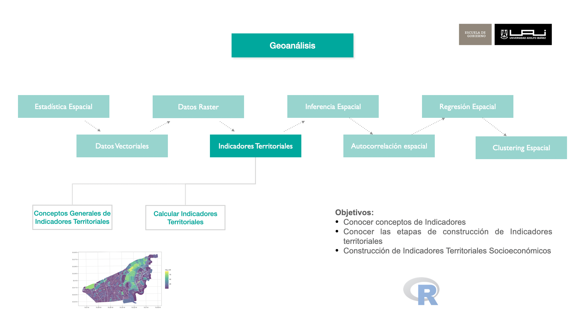
5.1 Definiciones
5.1.1 ¿Qué es un Indicador?:
Un indicador es una variable cuantitativa o cualitativa que se utiliza para medir y monitorear el estado, evolución o desempeño de un fenómeno, proceso o sistema específico a lo largo del tiempo. Los indicadores permiten transformar datos complejos en información accesible y comprensible, facilitando la toma de decisiones.
En el ámbito de las políticas públicas, los indicadores juegan un rol clave al ofrecer una representación clara y medible de los problemas sociales, económicos o ambientales. Por ejemplo, un indicador como la tasa de desempleo proporciona una visión comprensible del mercado laboral, permitiendo a los responsables de políticas adaptar sus decisiones y recursos para mitigar el desempleo. Los indicadores permiten evaluar el impacto de las políticas implementadas, ajustarlas cuando sea necesario, y comunicar los resultados de manera efectiva a la ciudadanía.
5.1.2 ¿Qué es un Indicador Territorial?:
Un indicador territorial es una medida que refleja características o fenómenos específicos de una región o área geográfica, tales como la accesibilidad, la distribución de recursos, el desarrollo socioeconómico o los niveles de seguridad. Estos indicadores están vinculados a un territorio y suelen ser utilizados para evaluar las condiciones y desigualdades entre distintas zonas.
Desde la perspectiva de las políticas públicas, los indicadores territoriales son esenciales para diseñar estrategias que respondan a las particularidades de diferentes regiones. Por ejemplo, un indicador territorial de accesibilidad a servicios de salud en zonas rurales permite identificar disparidades frente a áreas urbanas, facilitando la distribución equitativa de recursos. Estos indicadores también permiten a los gobiernos locales y nacionales identificar zonas prioritarias de intervención, optimizando el uso de los recursos y promoviendo un desarrollo territorial más equilibrado.
5.2 Etapas de Construcción un Indicador
La construcción de indicadores territoriales es un proceso metodológico que permite transformar datos complejos y dispersos en información útil para la toma de decisiones territoriales. Este proceso no solo involucra cálculos matemáticos o recolección de datos, sino que también requiere un análisis profundo de los problemas específicos del territorio, la definición de objetivos claros, y la contextualización dentro de un marco de referencia adecuado. Los indicadores territoriales permiten evaluar el desarrollo de un área específica, detectar desigualdades, y facilitar la planificación pública orientada a mejorar la calidad de vida y la sostenibilidad territorial.
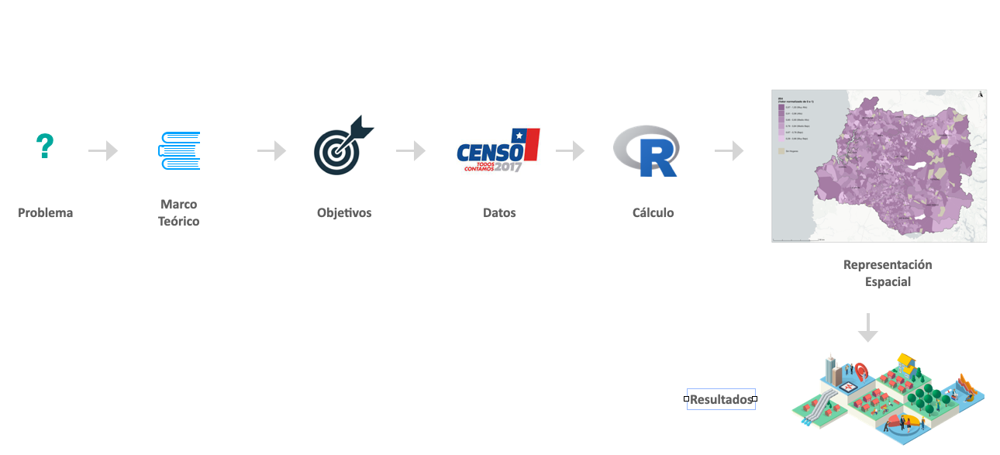
Para construir indicadores territoriales efectivos, es fundamental seguir una serie de etapas bien definidas. Cada una de estas etapas responde a diferentes necesidades del proceso, desde la identificación inicial de los problemas hasta el análisis y representación espacial de los resultados. Estas etapas permiten garantizar que los indicadores resulten útiles y precisos para la evaluación de políticas públicas y el desarrollo regional. A lo largo de esta sección, se explicarán las siguientes etapas clave: problema territorial, marco de referencia, definición de objetivos, recolección de datos, cálculo de indicadores, representación espacial, y análisis de resultados, cada una con su respectiva función en la construcción de indicadores territoriales.
5.2.1 Problema Territorial
En esta etapa, es fundamental describir con claridad el problema específico que afecta al territorio que se desea analizar. Esto puede incluir desafíos relacionados con temas sociales, económicos, ambientales, de seguridad, o de planificación urbana, entre otros. La descripción debe ser detallada, enfocándose en los aspectos que hacen único al problema dentro del contexto territorial.
Es crucial también explicar la relevancia del problema para la comunidad local, resaltando por qué este desafío es significativo y cómo afecta al desarrollo del territorio. Los indicadores territoriales jugarán un papel clave, ya que permiten medir y analizar el problema de manera objetiva, facilitando su comprensión. A largo plazo, estos indicadores proporcionarán la base para la toma de decisiones y la implementación de políticas públicas que contribuyan a resolver la problemática identificada.
Consideraciones Importantes:
Identificación del problema territorial: Describir de manera clara y precisa el problema específico (social, económico, ambiental, etc.) que afecta al territorio y su importancia para la comunidad.
Relevancia para la comunidad: Explicar por qué el problema es significativo para la población local y cómo influye en su desarrollo y bienestar.
Uso de indicadores territoriales: Destacar cómo los indicadores territoriales permiten cuantificar y analizar el problema, proporcionando una base sólida para la toma de decisiones y la formulación de políticas públicas.
5.2.2 Marco de Referencia
En esta etapa, es crucial establecer las teorías, conceptos y estudios previos que guiarán el análisis y la construcción de los indicadores. El marco teórico proporciona la base conceptual y metodológica necesaria para entender el problema territorial y justificar las decisiones que se tomen a lo largo del proceso de investigación.
Este marco incluye la revisión de la literatura relevante, donde se analizan teorías geográficas, modelos de análisis espacial y estudios previos que hayan abordado problemas similares. Es fundamental contextualizar el problema dentro de estos conceptos para comprender mejor su naturaleza y sus implicancias.
Consideraciones Importantes:
Contextualización del Problema: Comprender cómo las teorías y modelos existentes explican el problema territorial en cuestión y cómo los indicadores ayudarán a analizarlo.
Definición de Indicadores: A partir de la revisión de la literatura y de las teorías analizadas, se puede definir de manera precisa el tipo de indicador territorial que se pretende construir, asegurando que esté respaldado por enfoques metodológicos sólidos.
Guía para el Análisis: El marco de referencia orienta la recolección y análisis de los datos, asegurando que el enfoque adoptado esté alineado con las mejores prácticas del campo, y que los indicadores generados sean fiables y útiles para la toma de decisiones.
5.2.3 Definición de Objetivos
La definición de objetivos es una etapa clave en la construcción de indicadores territoriales, ya que proporciona una guía clara sobre lo que se espera lograr con el estudio. Estos objetivos deben estar alineados con el problema territorial identificado y deben estructurar el proceso de investigación de manera que todas las actividades contribuyan al propósito final del estudio.
Para asegurar que los objetivos sean claros y alcanzables, se recomienda utilizar el framework SMART (Specific, Measurable, Achievable, Relevant, Time-bound). Este enfoque ayuda a estructurar los objetivos de manera que sean específicos (centrados en aspectos concretos del problema), medibles (con resultados cuantificables), alcanzables (realistas dentro de los recursos disponibles), relevantes (pertinentes para el problema territorial) y limitados en el tiempo (con plazos definidos para su logro). De esta manera, los resultados del estudio serán tangibles y evaluables, facilitando la toma de decisiones informadas y la aplicación de políticas públicas más efectivas.
5.2.4 Identificación y Recolección de Datos
En esta etapa, se lleva a cabo la identificación y recopilación de los datos necesarios para calcular los indicadores territoriales. Este paso es crucial para garantizar que los datos utilizados sean de alta calidad y estén adecuadamente adaptados al análisis que se desea realizar.
La recolección de datos implica la identificación de fuentes tanto abiertas como cerradas, como bases de datos gubernamentales, estudios previos, sensores remotos o censos. Además, es importante evaluar la calidad de los datos recolectados, considerando diversas características clave: representatividad (que los datos reflejen con precisión la realidad del territorio), pertinencia (que los datos sean relevantes para los indicadores a construir), precisión (exactitud en las mediciones), actualidad (datos recientes), accesibilidad (fácil acceso y disponibilidad de los datos) y consistencia (coherencia en los datos a lo largo del tiempo y entre diferentes fuentes). Estos factores aseguran que los indicadores territoriales sean sólidos y confiables para la toma de decisiones.
Otras fuentes de información nacionales
Censo de Población y Vivienda
- Descripción: El Censo de Población y Vivienda se realiza cada diez años y ofrece un conteo exhaustivo de la población y sus características demográficas, económicas y de vivienda. Es una fuente crítica de datos para la planificación y desarrollo de políticas a nivel nacional y local.
- Enlace: Censo
Encuesta Nacional de Uso del Tiempo (ENUT)
- Descripción: La Encuesta Nacional de Uso del Tiempo (ENUT) proporciona información detallada sobre cómo las personas distribuyen su tiempo en diversas actividades, incluyendo trabajo remunerado, trabajo no remunerado, educación, ocio y cuidados. Es una herramienta clave para analizar la distribución del trabajo y la desigualdad de género en el uso del tiempo.
- Enlace: ENUT
Encuesta de Caracterización Socioeconómica Nacional (CASEN)
- Descripción: La Encuesta de Caracterización Socioeconómica Nacional (CASEN) es la principal fuente de datos sobre las condiciones socioeconómicas de los hogares en Chile. Proporciona información sobre ingresos, educación, salud, vivienda y otras dimensiones del bienestar, siendo fundamental para el diseño y evaluación de políticas públicas.
- Enlace: CASEN
Encuesta de Presupuestos Familiares (EPF)
- Descripción: La Encuesta de Presupuestos Familiares (EPF) proporciona información sobre los ingresos y gastos de los hogares chilenos, permitiendo el análisis de la estructura del consumo y las condiciones de vida de la población.
- Enlace: EPF
Encuesta Nacional de Empleo (ENE)
- Descripción: La Encuesta Nacional de Empleo (ENE) ofrece datos sobre la situación laboral de la población, incluyendo tasas de empleo, desempleo y subempleo, así como características de la fuerza laboral.
- Enlace: ENE
Encuesta de Victimización (ENUSC)
- Descripción: La Encuesta Nacional Urbana de Seguridad Ciudadana (ENUSC) proporciona datos sobre la percepción de seguridad y la prevalencia de delitos en la población urbana de Chile.
- Enlace: ENUSC
Sistema Nacional de Información Municipal (SINIM)
- Descripción: El Sistema Nacional de Información Municipal (SINIM) ofrece información sobre la gestión y desempeño de los municipios en Chile, incluyendo datos financieros, de infraestructura y servicios.
- Enlace: SINIM
Datos.gob
- Descripción: Datos.gob el repositorio de datos abiertos centralizado del Estado. En este portal encontrarás datos y estadísticas del sector público, para distintos fines, como aplicaciones, visualizaciones, investigación, etc.
- Enlace: datos.gob.cl
IDE Chile
- Descripción: La Infraestructura de Datos Geoespaciales de Chile (IDE Chile), dependiente del Ministerio de Bienes Nacionales.
- Enlace: IDE Chile
Estas fuentes de datos proporcionan una base sólida para el análisis de diversas dimensiones del desarrollo en Chile, siendo de gran utilidad para investigadores, planificadores y tomadores de decisiones.
5.2.5 Cálculo de Indicadores
El cálculo de indicadores territoriales es una etapa clave en el análisis espacial, ya que permite convertir datos brutos en información específica que describe una condición, actividad o resultado dentro de un área geográfica definida. Este proceso es fundamental para comprender cómo las personas y los recursos interactúan dentro de un territorio, proporcionando una representación cuantitativa de fenómenos complejos.
Los indicadores territoriales no solo ofrecen una visión numérica del territorio, sino que también permiten identificar patrones espaciales que podrían no ser evidentes a simple vista. Su valor radica en su capacidad de sintetizar interacciones complejas en métricas claras y comprensibles, facilitando así la toma de decisiones informadas. Estos indicadores ayudan a identificar problemas, evaluar el impacto de políticas públicas y detectar oportunidades de desarrollo a nivel local o regional, siendo herramientas cruciales para la gestión territorial y el análisis de políticas públicas.
5.2.6 Representación Espacial
La representación espacial consiste en visualizar los resultados del cálculo de los indicadores territoriales mediante mapas, gráficos o modelos. Esto permite comprender de manera clara la distribución y las relaciones de los fenómenos que los indicadores describen en un territorio. Este paso es fundamental, ya que transforma resultados numéricos abstractos en representaciones visuales comprensibles y accesibles para el análisis y la toma de decisiones.
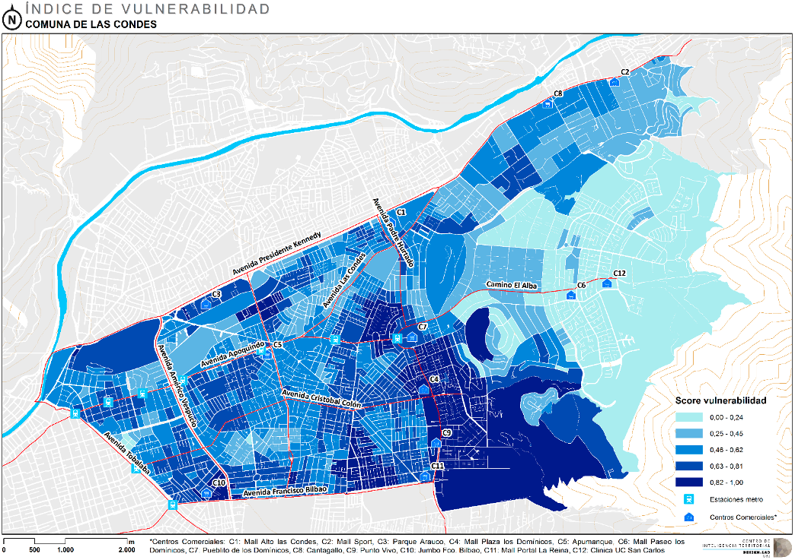
La representación visual de los resultados de los indicadores facilita la interpretación de datos complejos, mejorando la comunicación de los resultados del análisis. Esta claridad visual es crucial para detectar situaciones problemáticas, como áreas con carencias o desigualdades, y para identificar oportunidades de intervención en el territorio. Así, los mapas y otros recursos visuales se convierten en herramientas esenciales para la planificación y gestión territorial, así como para la implementación de políticas públicas.
5.2.7 Análisis de Resultados
La etapa de análisis de resultados es fundamental en la construcción de indicadores territoriales, ya que permite evaluar si se han cumplido los objetivos planteados y cómo los resultados obtenidos responden al problema territorial definido al inicio del estudio. Durante esta etapa, se examinan los patrones y tendencias revelados por los indicadores, lo que permite identificar fenómenos territoriales, desigualdades o comportamientos inesperados que requieren atención especial.
Este análisis no solo implica la interpretación de los valores numéricos o visuales, sino que también requiere una comprensión profunda de las dinámicas espaciales que subyacen en los datos. Comparar los resultados obtenidos con la situación inicial del problema permite destacar áreas de alta prioridad y oportunidades de intervención. El análisis de resultados también ayuda a ajustar las hipótesis iniciales o incluso a formular nuevas, más alineadas con la realidad observada.
Finalmente, esta etapa proporciona una base sólida para la toma de decisiones informadas, al ofrecer información clave que permite a los responsables de la planificación y gestión proponer soluciones focalizadas y basadas en evidencia, contribuyendo a una mejor gestión del territorio.
5.3 Construcción de Indicadores Socioconómicos
El Centro de Inteligencia Territorial de la Universidad Adolfo Ibáñez, bajo proyecto denominado Matriz de Bienestar Humano Territorial (MBHT) construyó una serie indicadores territoriales, que buscan comprender las condiciones de los entornos urbanos y rurales, para construir soluciones que impacten positivamente en el bienestar de las personas y su hábitat.
El sistema MBHT consiste en 18 indicadores territoriales agrupados en 4 dimensiones, que corresponde a las dimensiones de Accesibilidad, Ambiental, Seguridad y Socoeconómicas, siendo esta última a la se replicará.
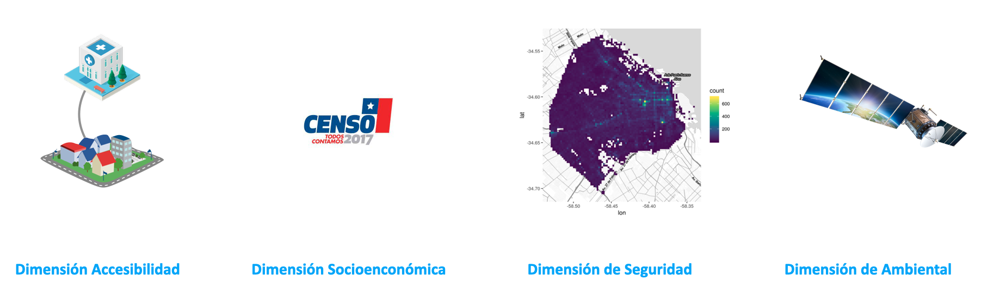
Las ciudades de Chile presentan altos índices de segregación (Sabatini (2002)), que reflejan la separación espacial de distintos grupos sociales (Ruiz-Tagle and López (2014)). La intensidad de este fenómeno hace imperativo el considerar la condición social como una dimensión estructurante en la evaluación de Políticas Públicas.
5.3.1 Insumos Censo 2017
Para la construcción de los indicadores territoriales que componen la dimensión seocioeconómica, se utiliza íntegramente información del Censo 2017.
¿Que es Censo 2017?:
El censo de población y vivienda es la operación estadística más importante que realiza el INE y en la cual participan todos los habitantes del país, ya que este es un insumo esencial para elaborar estimaciones y proyecciones de población tanto para el país, las regiones y las comunas.
El censo permite contar con información esencial para el adecuado diseño de políticas públicas y toma de decisiones privadas y públicas. El último censo de población y vivienda realizado fue en 2017. Sus resultados indican que la población efectivamente censada llegó a un total de 17.574.003 personas.
De ellas, 8.601.989 (48,9%) son hombres y 8.972.014 (51,1%), mujeres. El número de viviendas, en tanto, fue 6.499.355, de las cuales 6.486.533 (99,8%) corresponden a viviendas particulares y 12.822 (0,2%) a colectivas.
Para estos fines, se utilizaremos información censal agregada a nivel de manzanas obtenidos del Censo 2017, a continuación se explorará los insumos utilizados.
5.3.2 Insumos del Censo
Para los indicadores que se crearán a continuación se utilizará una base proveniente de la consolidación de las bases del censo, denominadas microdatos de Personas, Viviendas y Hogares provenientes de los resultados de la Encuesta del Censo 2017 del Instituto Nacional de Estadísticas, Chile.
Lectura de Insumos y selección de región de estudio, en este caso seleccionará la Región de Coquimbo compuesta por las provincias de Elqui, Limarí y Choapa. Sus principales centros urbanos son la Conurbación La Serena-Coquimbo con 506 391 habitantes, seguida de Ovalle con 121.269 habitantes según el Censo chileno de 2017.
# selección de región
reg <- "R04"
# Lectura de insumo espacial
path_file <- paste0(path_insumos, reg, "_INSUMO_SOCIOECONOMICO.shp")
censo <- st_read(path_file, quiet = T)Visualización de Tabla de Información head()
| ID_MANZ | MANZ_EN | NOM_COM | COD_COM | NOM_REG | COD_REG | NOM_PROV | COD_PROV | ZONA | ID_MANZCIT | AREA | TOTAL_V | HOG_N | PERSONAS | E4A18 | E15A24 | ESCOLAR | P03A_4 | P03A_5 | P03A_6 | P03B_4 | P03B_6 | P03B_7 | P03C_4 | P03C_5 | NIV_HAC2 | NIV_HAC3 | HOMBRES | MUJERES | MONOPAR | P17_ACT | P17_4 | J_NINI | JH_HASTA_P | JH_HASTA_S | geometry |
|---|---|---|---|---|---|---|---|---|---|---|---|---|---|---|---|---|---|---|---|---|---|---|---|---|---|---|---|---|---|---|---|---|---|---|---|
| 4101071001900 | URBANO | LA SERENA | 4101 | REGIÓN DE COQUIMBO | 4 | ELQUI | 41 | 4101071001 | 4101071001900001 | 2873.376 | 0 | 0 | 0 | 0 | 0 | 0 | 0 | 0 | 0 | 0 | 0 | 0 | 0 | 0 | 0 | 0 | 0 | 0 | 0 | 0 | 0 | 0 | 0 | 0 | POLYGON ((292811 6685815, 2... |
| 4101071001900 | URBANO | LA SERENA | 4101 | REGIÓN DE COQUIMBO | 4 | ELQUI | 41 | 4101071001 | 4101071001900002 | 1256.480 | 0 | 0 | 0 | 0 | 0 | 0 | 0 | 0 | 0 | 0 | 0 | 0 | 0 | 0 | 0 | 0 | 0 | 0 | 0 | 0 | 0 | 0 | 0 | 0 | POLYGON ((293056 6685511, 2... |
| 4102101001900 | URBANO | COQUIMBO | 4102 | REGIÓN DE COQUIMBO | 4 | ELQUI | 41 | 4102101001 | 4102101001900001 | 1230.344 | 0 | 0 | 0 | 0 | 0 | 0 | 0 | 0 | 0 | 0 | 0 | 0 | 0 | 0 | 0 | 0 | 0 | 0 | 0 | 0 | 0 | 0 | 0 | 0 | POLYGON ((285917.8 6664517,... |
| 4102101001900 | URBANO | COQUIMBO | 4102 | REGIÓN DE COQUIMBO | 4 | ELQUI | 41 | 4102101001 | 4102101001900002 | 3877.142 | 0 | 0 | 0 | 0 | 0 | 0 | 0 | 0 | 0 | 0 | 0 | 0 | 0 | 0 | 0 | 0 | 0 | 0 | 0 | 0 | 0 | 0 | 0 | 0 | POLYGON ((286085 6664254, 2... |
| 4102101001900 | URBANO | COQUIMBO | 4102 | REGIÓN DE COQUIMBO | 4 | ELQUI | 41 | 4102101001 | 4102101001900003 | 34392.873 | 0 | 0 | 0 | 0 | 0 | 0 | 0 | 0 | 0 | 0 | 0 | 0 | 0 | 0 | 0 | 0 | 0 | 0 | 0 | 0 | 0 | 0 | 0 | 0 | POLYGON ((286082.4 6663489,... |
| 4106101001900 | URBANO | VICUÑA | 4106 | REGIÓN DE COQUIMBO | 4 | ELQUI | 41 | 4106101001 | 4106101001900001 | 4033.107 | 0 | 0 | 0 | 0 | 0 | 0 | 0 | 0 | 0 | 0 | 0 | 0 | 0 | 0 | 0 | 0 | 0 | 0 | 0 | 0 | 0 | 0 | 0 | 0 | POLYGON ((310231.6 6684580,... |
5.4 Indicador de Escolaridad del jefe de hogar (IEJ)
Para la construcción de este indicador se utilizó el promedio de años de estudio de jefes de hogar (EJH), que es una variable censal numérica (“ESCOLARIDAD”, en tabla de personas del censo 2017) que registra el nivel del curso más alto aprobado, medida en años sucesivos desde la enseñanza básica hasta estudios de postgrado.
Se calcula el promedio de esta variable para todos los jefes de hogar en cada manzana. Esta variable es representativa del capital cultural de cada hogar y está altamente correlacionada con el nivel de ingresos en Chile (Agostini et al. (2016)).
IEJ = ESCOLAR
Cálculo Indicador de Escolaridad del jefe de hogar (IEJ)
censo <- censo %>%
mutate( IEJ = ifelse(PERSONAS ==0, NA, ESCOLAR))Para efectos de visualización se enfocará los resultados en las zonas urbanas de la comuna de La Serena en todos los indicadores que se presentarán.
la_serena_urb <- censo %>%
filter(COD_COM == 4101 & MANZ_EN == "URBANO")Visualizar la Variable de IEJ comuna de La Serena URBANO:
ggplot() +
geom_sf(data = la_serena_urb, aes(fill = IEJ), color =NA,
alpha=0.8, size= 0.1)+
scale_fill_distiller(palette= "YlGnBu", direction = 1)+
ggtitle("Indicador de Escolaridad del jefe de hogar (IEJ) - Urbano" ) +
theme_bw() +
theme(panel.grid.major = element_line(colour = "gray80"),
panel.grid.minor = element_line(colour = "gray80"))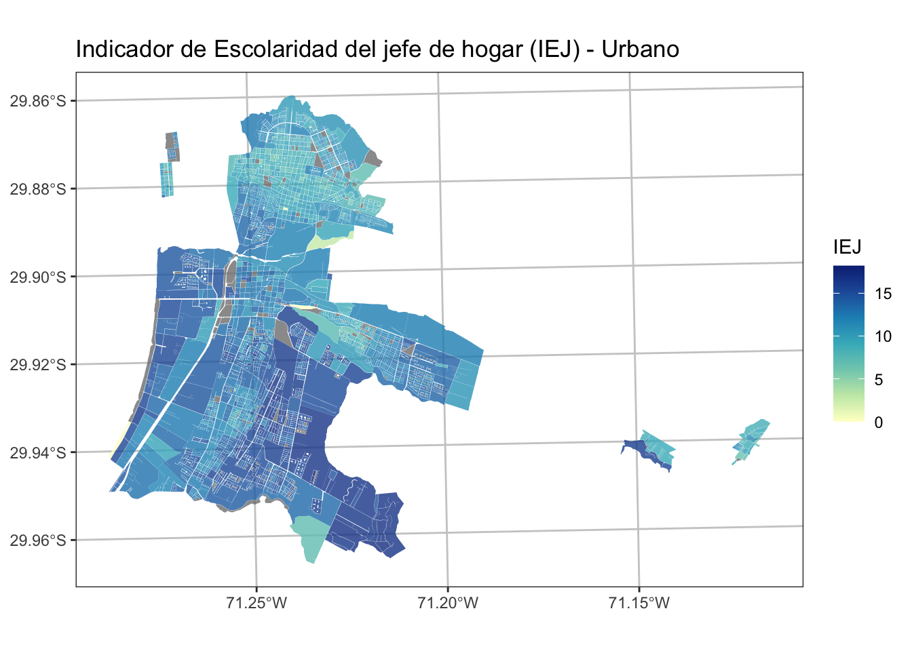
# mapview::mapview(censo %>% filter(COD_COM == 4101 & MANZ_EN == "URBANO"),
# zcol = "IEJ", layer.name = "IEJ")Visualizar la Variable de IEJ comuna de La Serena RURAL:
la_serena_rural <- censo %>% filter(COD_COM == 4101 & MANZ_EN == "RURAL")
ggplot() +
geom_sf(data = la_serena_rural, aes(fill = IEJ), color =NA,
alpha=0.8, size= 0.1)+
scale_fill_distiller(palette= "YlGnBu", direction = 1)+
ggtitle("Indicador de Escolaridad del jefe de hogar (IEJ) - Rural" ) +
theme_bw() +
theme(panel.grid.major = element_line(colour = "gray80"),
panel.grid.minor = element_line(colour = "gray80"))
# mapview::mapview(censo %>% filter(COD_COM == 4101 & MANZ_EN == "RURAL"),
# zcol = "IEJ", layer.name = "IEJ")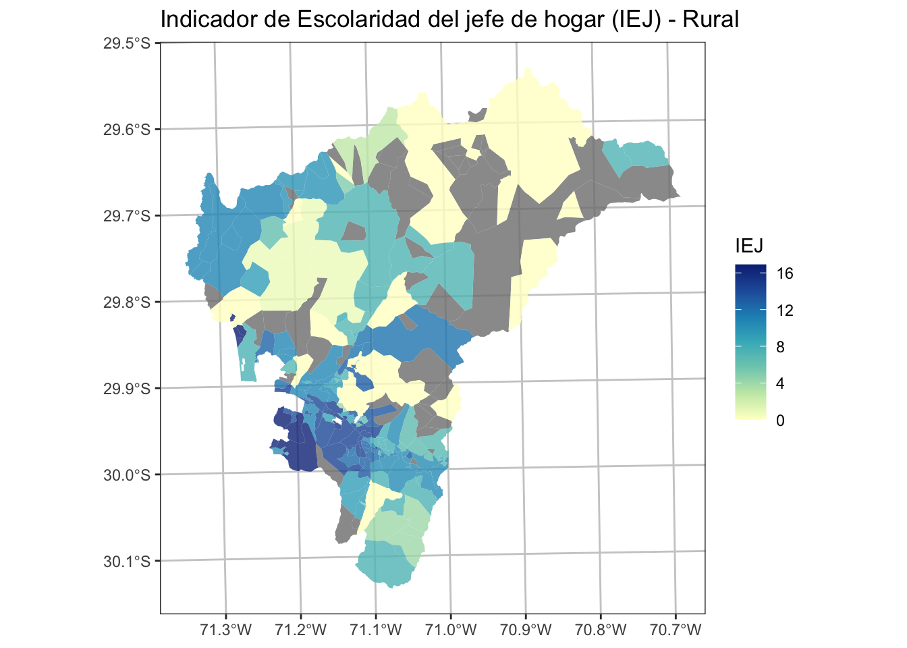
5.5 Indicador de Empleo (IEM)
Para este indicador se usó la proporción de población activa sin empleo que es la fracción de las personas que no tienen empleo y están buscando uno, respecto al total de personas en condiciones y con deseo de trabajar en cada manzana.
Esta variable es similar al cálculo de desempleo, pero calculada a escala de manzanas y en un tiempo específico, por lo que representa las brechas potenciales que existen para acceder al empleo en barrios específicos (MDS, 2019).
IEM = 1- \left(\frac{P17\_4}{P17\_ACT} \right)
Cálculo Indicador de Empleo (IEM)
P17_4: Trabajo la semana pasada, opción 4: “Se encontraba buscando empleo”
P17_ACT: Total de Actividades Remuneradas (no es pregunta del Censo)
# P17: Trabajo la semana pasada
# opción `4`: "Se encontraba buscando empleo"
# P17_ACT: Total de Actividades Remuneradas
censo <- censo %>% mutate( CESA_DENS = P17_4 / P17_ACT)
# Invertir el valor de indicador 1
censo <- censo %>% mutate( IEM = 1 - CESA_DENS )De aquí continuación se realizarán cartografías solo a zonas urbanas a efecto de limitar la extensión del presente documento, pero el cálculo urbano se puede efectuar perfectamente aplicando un filtro como se ejemplifico en el indicador anterior. Ahora, se procede a filtrar por zonas urbanas
la_serena_urb <- censo %>% filter(COD_COM == 4101 & MANZ_EN == "URBANO")Visualizar la Variable de IEM comuna de La Serena URBANO:
ggplot() +
geom_sf(data = la_serena_urb, aes(fill = IEM), color =NA,
alpha=0.8, size= 0.1)+
scale_fill_distiller(palette= "PuBu", direction = 1)+
ggtitle("Indicador de Empleo (IEM) - Urbano" ) +
theme_bw() +
theme(panel.grid.major = element_line(colour = "gray80"),
panel.grid.minor = element_line(colour = "gray80"))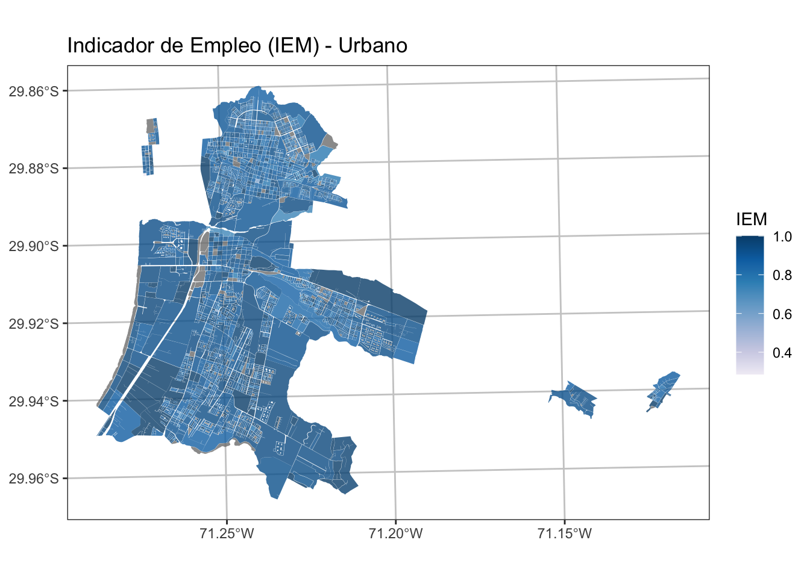
# mapview::mapview(la_serena_urb,
# zcol = "IEM", layer.name = "IEM")5.6 Indicador de Participación Juvenil en empleo y estudio (IPJ)
Para la construcción de este indicador se utilizó la proporción de jóvenes entre 14 y 24 años que no trabajan ni estudian: es la fracción de jóvenes en este rango edad que no trabajan ni estudian, respecto al total de este segmento etario en cada manzana.
Esta variable representa un riesgo de exclusión socioeconómica en el período de transición entre el ambiente educativo y el laboral, siendo característico de trayectorias de deserción escolar que conducen al desempleo y que podrían incrementar el riesgo de adopción de comportamientos delictivos (MDS, 2019).
Luego, el indicador se normalizó con su inverso aditivo, para asegurar que el valor máximo, sea lo más deseable y el 0 lo menos deseable, convirtiéndose así en un indicador de empleo.
IPJ = 1 - \left(\frac{J\_NINI}{E15A24} \right)
Cálculo Indicador de Participación Juvenil en empleo y estudio (IPJ)
J_NINI: Jóvenes que no trabajan ni estudian P17 E15A24: Jóvenes entre 15 y 24 años de edad
censo <- censo %>% mutate( NINI_DENS = J_NINI / E15A24)
censo <- censo %>% mutate( NINI_DENS = ifelse(NINI_DENS > 1, 1, NINI_DENS))
censo <- censo %>% mutate( IPJ = 1 - NINI_DENS )la_serena_urb <- censo %>% filter(COD_COM == 4101 & MANZ_EN == "URBANO")Visualizar la Variable de IPJ comuna de La Serena URBANO:
ggplot() +
geom_sf(data = la_serena_urb, aes(fill = IPJ), color =NA,
alpha=0.8, size= 0.1)+
scale_fill_distiller(palette= "Purples", direction = 1)+
ggtitle("Indicador de Participación Juvenil en empleo y estudio (IPJ) - Urbano" ) +
theme_bw() +
theme(panel.grid.major = element_line(colour = "gray80"),
panel.grid.minor = element_line(colour = "gray80"))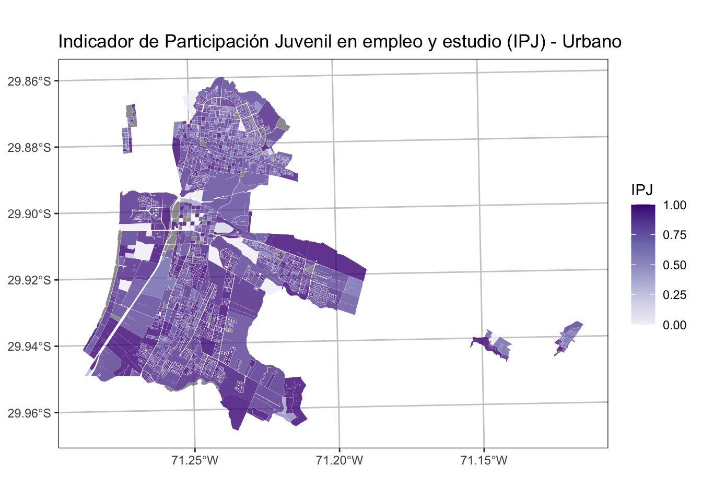
# mapview::mapview(la_serena_urb,
# zcol = "IPJ", layer.name = "IPJ")5.7 Indicador de Resiliencia de Hogares (IRH)
En particular, la monoparentalidad es ampliamente reconocida en la literatura internacional como una situación familiar frágil, que puede afectar las trayectorias de vida de los hijos, en términos de un mayor riesgo de mortalidad (Amato & Patterson, 2017), inestabilidad psicológica (Theodoritsi, Daliana & Antoniou, 2018), problemas de salud (Duriancik & Goff, 2019) y otros.
En suma, el Indicador de Resiliencia de Hogares (en base a la monoparentalidad), en complemento a otras variables, es conceptualmente relevante para evaluar riesgos no monetarios de condiciones sociales.
Este indicador es el inverso aditivo de la proporción de hogares monoparentales dentro de una manzana. Los hogares monoparentales son aquellos con hijos que viven con un solo progenitor, lo que se asocia en diversas formas a la condición social, que abarcan desde un menor ingreso, problemas de salud y delincuencia, entre otros (MDS, 2019).
Al contrario, los hogares biparentales permiten el apoyo entre progenitores y los hogares sin hijos tienen menores exigencias de gasto y tiempo relacionadas con la paternidad, por lo que se considera que en general son más resilientes.
IRH = 1 - \left(\frac{MONOPAR}{HOG\_N} \right)
Cálculo de Indicador de Resiliencia de Hogares (IRH)
MONOPAR: Hogares Monoparentales
HOG_N: Número de Hogares
censo <- censo %>% mutate( MONO_DENS = MONOPAR / HOG_N)
censo <- censo %>% mutate( MONO_DENS = ifelse(MONO_DENS > 1, 1, MONO_DENS))
censo <- censo %>% mutate( IRH = 1 - MONO_DENS)la_serena_urb <- censo %>% filter(COD_COM == 4101 & MANZ_EN == "URBANO")Visualizar la Variable de IRH comuna de La Serena URBANO:
ggplot() +
geom_sf(data = la_serena_urb, aes(fill = IRH), color =NA,
alpha=0.8, size= 0.1)+
scale_fill_distiller(palette= "PuRd", direction = 1)+
ggtitle("Indicador de Resiliencia de Hogares (IRH) - Urbano") +
theme_bw() +
theme(panel.grid.major = element_line(colour = "gray80"),
panel.grid.minor = element_line(colour = "gray80"))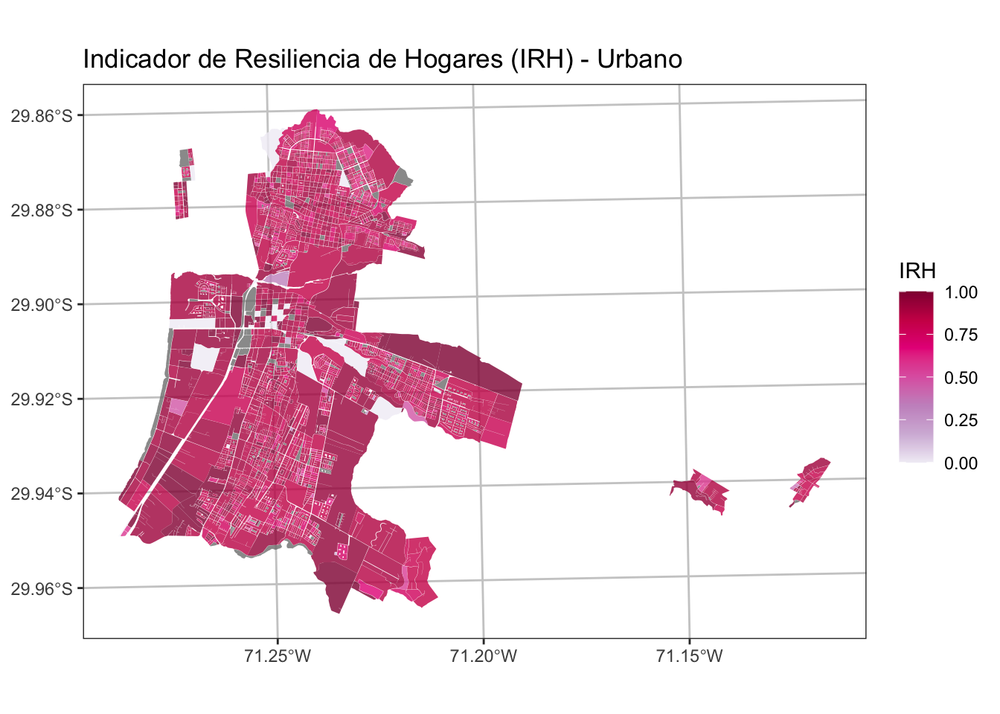
# mapview::mapview(la_serena_urb,
# zcol = "IRH", layer.name = "IRH")5.8 Indicador de Calidad de la Vivienda (IVI)
El indicador de calidad de vivienda es una variable sintética de todas las materialidades de la vivienda. Inicialmente, se construyó como un indicador de mala calidad, tomando un valor más alto cuando la calidad de la vivienda es peor y es más bajo cuando es mejor. Fue elaborado como un promedio lineal del 3 sub-indicadores de paredes, suelo y techo. Cada uno de estos sub-indicadores registra el porcentaje de viviendas de la manzana que tienen paredes, suelo o techo considerado insuficiente. Las construcciones consideradas insuficientes son las siguientes:
Paredes: Material de los muros exteriores
paredes= \frac{(P03A\_4 + P03A\_5 + P03A\_6)}{TOTAL\_V}
- P03A_4: Tabique sin forro interior (madera u otro)
- P03A_5: Adobe, barro, quincha, pirca u otro artesanal tradicional
- P03A_6: Materiales precarios (lata, cartón, plástico, etc.)
Techo: Material en la cubierta del techo
techo= \frac{(P03B\_4 + P03B\_6 + P03B\_7)}{TOTAL\_V}
- P03B_4: Fonolita o plancha de fieltro embreado
- P03B_6: Materiales precarios (lata, cartón, plásticos, etc.)
- P03B_7: Sin cubierta sólida de techo
Suelo: Material de construcción del piso
suelo= \frac{(P03C\_4 + P03C\_5)}{TOTAL\_V}
- P03C_4: Capa de cemento sobre tierra
- P03C_5: Tierra
censo <- censo %>%
mutate(paredes = (P03A_4 + P03A_5 + P03A_6)/TOTAL_V,
techo = (P03B_4 + P03B_6 + P03B_7)/TOTAL_V,
suelo = (P03C_4 + P03C_5)/TOTAL_V)
# eliminar valores infinitos de la división anterior
censo <- censo %>%
mutate(paredes = ifelse(paredes > 1, 1, paredes),
techo = ifelse(techo > 1, 1, techo),
suelo = ifelse(suelo > 1, 1, suelo))Cálculo Indicador de Calidad de la Vivienda (IVI)
IVI= 1 - \left(\frac{paredes+ suelo+ techo}{3}\right)
censo <- censo %>% mutate(IVI = (paredes+ suelo+ techo)/3)
censo <- censo %>% mutate(IVI = 1 - IVI) # invertir sentidola_serena_urb <- censo %>% filter(COD_COM == 4101 & MANZ_EN == "URBANO")Visualizar la Variable de IVI comuna de La Serena URBANO:
ggplot() +
geom_sf(data = la_serena_urb, aes(fill = IVI), color =NA,
alpha=0.8, size= 0.1)+
scale_fill_distiller(palette= "YlOrRd", direction = 1)+
ggtitle("Indicador de Calidad de la Vivienda (IVI) - Urbano") +
theme_bw() +
theme(panel.grid.major = element_line(colour = "gray80"),
panel.grid.minor = element_line(colour = "gray80"))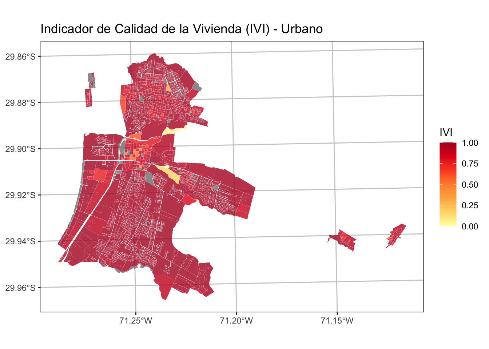
# mapview::mapview(la_serena_urb,
# zcol = "IVI", layer.name = "IVI")5.9 Indicador de Suficiencia de Viviendas (ISV)
El indicador de Suficiencia de Viviendas se construyó inicialmente como un indicador de hacinamiento. Se realizó a partir de 2 variables que indican el número de viviendas que se encuentran en situación de hacinamiento y el número de viviendas que se encuentran en situación de hacinamiento severo. El indicador corresponde a la suma de 2 veces las viviendas en situación de hacinamiento severo con las viviendas en situación de hacinamiento normal, dividido por el total de viviendas.
Luego, el indicador se normalizó con su inverso aditivo, para asegurar que el valor máximo, sea lo más deseable y el 0 lo menos deseable. Con esto se obtuvo el indicador de suficiencia de viviendas.
El indicador de sificiencia de la vivienda debe ser normalizado, por lo cual se usará la función de normalización minmax (Equation 5.1) que se describe a continuación:
x^{\prime}=\frac{x-min(x)}{max(x)-min(x)} \tag{5.1}
# función de normalización
minmax <- function(x) {
x <- (x - min(x, na.rm = TRUE)) /
(max(x, na.rm = TRUE) - min(x, na.rm = TRUE))
return(x)
}Cálculo de Indicador de Suficiencia de Viviendas (ISV)
ISV = 1 - minmax(NIV\_HAC2 + (2 \times NIV\_HAC3)
NIV_HAC2: >= 2.5 personas por habitación (Hacinamiento)
NIV_HAC3: >= 5 personas por habitación (Hacinamiento severo)
censo <- censo %>% mutate(ISV = NIV_HAC2 + (2 * NIV_HAC3))
censo <- censo %>% mutate(ISV = 1 - minmax(ISV))la_serena_urb <- censo %>% filter(COD_COM == 4101 & MANZ_EN == "URBANO")Visualizar la Variable de ISV comuna de La Serena URBANO:
ggplot() +
geom_sf(data = la_serena_urb, aes(fill = ISV), color =NA,
alpha=0.8, size= 0.1)+
scale_fill_distiller(palette= "YlOrRd", direction = 1)+
ggtitle(" Indicador de Suficiencia de Viviendas (ISV) - Urbano") +
theme_bw() +
theme(panel.grid.major = element_line(colour = "gray80"),
panel.grid.minor = element_line(colour = "gray80"))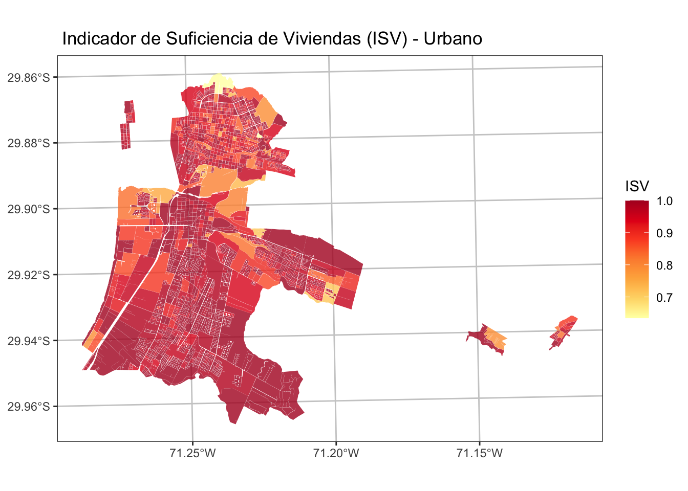
# mapview::mapview(la_serena_urb,
# zcol = "ISV", layer.name = "ISV")5.10 Consolidación de Dimensión Socioeconómica
Selección de Variables de Interés
# names(censo)
soc <- censo %>%
dplyr::select(ID_MANZ:PERSONAS, IEJ, IEM, IPJ, IRH, IVI, ISV)Cáculo de la dimensión Es una alternativa. Lo oficial imputa NA con valores de los vecinos cercanos.
inds <- c("IEJ", "IEM", "IPJ", "IRH", "IVI", "ISV")
dim_soc <- soc %>%
st_drop_geometry() %>%
mutate(across(all_of(inds), ~ minmax(.x))) %>%
mutate(dim_soc = rowMeans(across(all_of(inds)), na.rm = TRUE)) %>% # Calcula el promedio
mutate(dim_soc = ifelse(PERSONAS == 0, NA, dim_soc)) %>%
dplyr::select(ID_MANZCIT, dim_soc)
soc <- soc %>%
left_join(dim_soc, by = "ID_MANZCIT")Visualización de los Indicadores
comuna <- soc %>% filter(COD_COM == 4101 & MANZ_EN == "URBANO")
mapview(comuna, zcol = "IEJ") + mapview(comuna, zcol = "IEM")+
mapview(comuna, zcol = "IPJ") + mapview(comuna, zcol = "IRH")+
mapview(comuna, zcol = "IVI") + mapview(comuna, zcol = "ISV")Guardar Resultados
# guardar shapefile
path_file_out <- paste0("data/socioeconomicos/resultados/",
reg, "_ind_socioeconomicos.shp")
st_write(soc, path_file_out, delete_dsn = T)
#guardar en RDS
path_file_out_rds <- paste0("data/socioeconomicos/resultados/",
reg, "_ind_socioeconomicos.rds")
saveRDS(soc, path_file_out_rds)